Short answer
HubSpot enrolls each record in a workflow only the first time it meets the trigger. To get a second run, turn on re-enrollment and tick the specific trigger that should re-enroll. Even then, the record has to go from not matching to matching again, it cannot still be in the workflow, and activity triggers, calculated properties, and multi-value "is any of" filters never re-enroll.
1. Re-enrollment is off
This is the default for every new workflow. A contact that completed the workflow last month will not go through it again, no matter how many times it meets the trigger. Here is where the switch lives in a contact-based workflow.
-
Go to Automation > Workflows and click the name of the workflow.
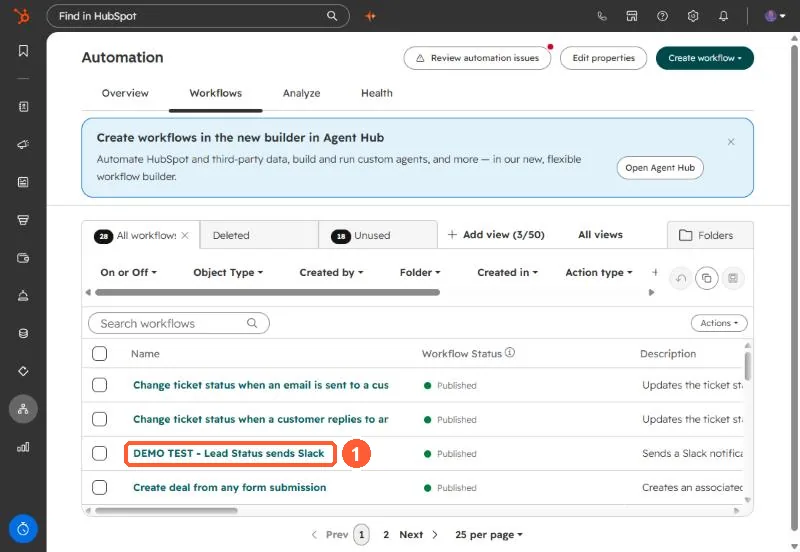
Open the workflow from the Workflows tab. -
Look at the footer of the Trigger enrollment for contacts card at the top of the workflow. It says Re-enroll off or Re-enroll on, which answers the question in one glance. Click the card to open it.
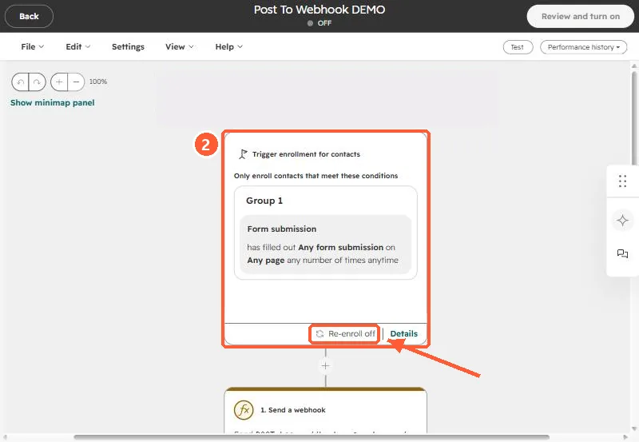
The trigger card footer shows the re-enrollment status. -
In the Triggers panel, click the Settings tab. Under Re-enroll, toggle on Allow contacts to re-enroll after completing the workflow.
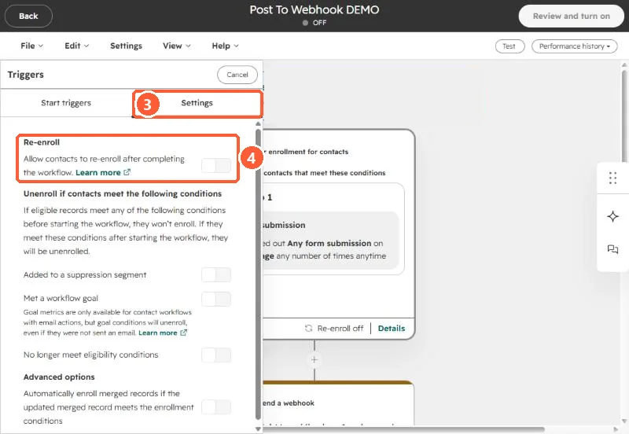
Settings tab (3), then the Re-enroll switch (4). Not where the docs sayHubSpot's knowledge base still calls this the "Re-enrollment tab." In the workflow editor as of October 2, 2026, the switch sits under the trigger panel's Settings tab.
-
With the switch on, select each trigger that should re-enroll contacts, then save.


Same place. Click the enrollment trigger card, open the Settings tab, and toggle on Re-enroll.
2. The switch is on, but that trigger is not ticked
Turning on re-enrollment does nothing by itself. HubSpot only re-enrolls on the triggers you select underneath the switch. If your workflow has three enrollment conditions and you only ticked one, the other two will enroll a contact the first time and never again. Open the trigger's Settings tab and select every trigger you actually want.
Under the switch, HubSpot spells out when contacts will come back in a list titled Contacts will re-enroll when. A working setup lists at least one trigger with a check mark. If the list only says They are manually re-enrolled, nothing will re-enroll automatically, even though the card footer reads Re-enroll on.

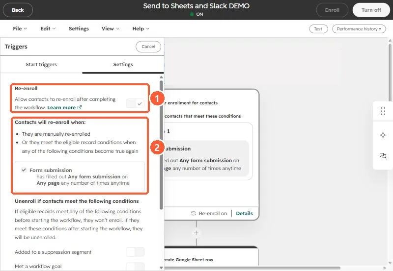
3. The contact never stopped matching
Re-enrollment fires when a record goes from not matching a trigger to matching it. Staying in a matching state is not a new event.
HubSpot's own example is list membership. If the trigger is "is a member of list" and the contact stays in that list, it finishes the workflow once and stops. It only re-enrolls after it leaves the list and joins it again.
The same applies to property values. If the trigger is Lead status is any of Open and the contact's lead status is still Open, setting it to Open again changes nothing.

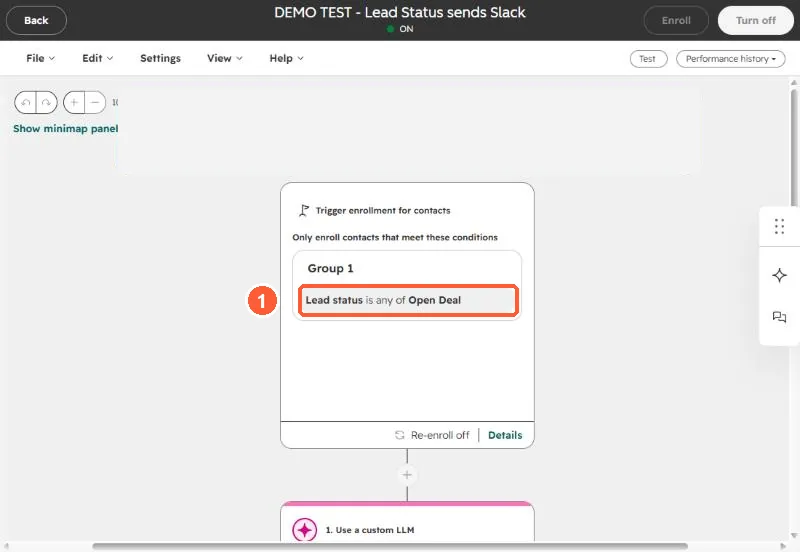
If the contact should run through again the next time something happens, make the last action of the workflow clear or change the trigger property. Then the next real update is a genuine change from not matching to matching, and re-enrollment fires.
Also worth knowing: a trigger using is known re-enrolls when the property gets its first value and every time the value changes, as long as the contact still meets the original enrollment triggers. That is useful on purpose and noisy by accident.
4. The contact is still in the workflow
A record cannot re-enroll while it is enrolled. If your workflow has a long delay, a contact sitting in it will ignore every trigger until it finishes or is unenrolled.
To check, open the workflow and click Performance history in the top right. Two options there answer most "why didn't it enroll" questions:

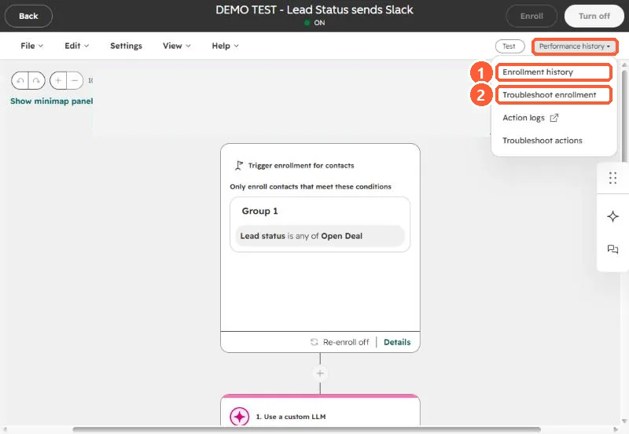
Enrollment history lists every run in a date range, newest first, so you can see whether the contact is mid-workflow or already finished.

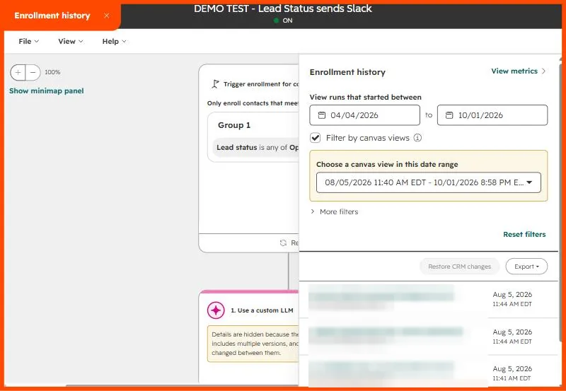
Troubleshoot enrollment is the better tool when a contact did not come through at all. Pick the contact you expected to enroll, and HubSpot lists every time that record matched part of the trigger in the date range. You can then run a test that shows which criteria and settings allowed or blocked enrollment.

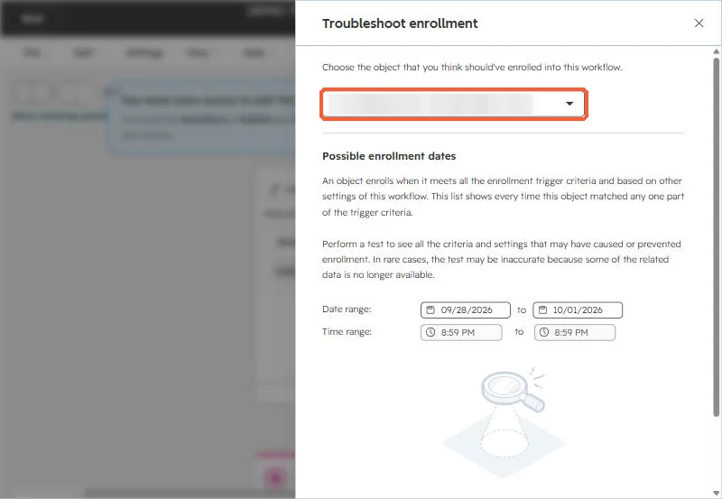
If the contact is still active, either wait it out, unenroll it, or rethink whether a 30-day delay belongs in a workflow that should restart.
5. The trigger can't be used for re-enrollment at all
Some enrollment conditions work for first enrollment but are blocked from re-enrollment. HubSpot flags them in a yellow box when you turn re-enrollment on. Here is a real example: the only trigger is Number of form submissions, a calculated property, so the workflow can only re-enroll contacts by hand while the card still says Re-enroll on.

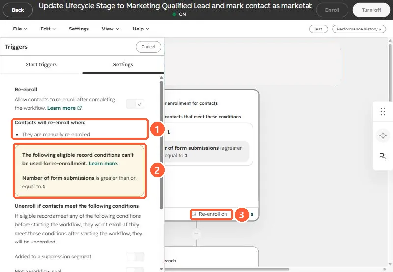
For contact-based workflows, the common blocked conditions are:
- Activities and activity properties, in every workflow type.
- Calculation properties, including built-in ones like Recent conversion and Number of unique forms submitted.
- Privacy consent events.
- "Is any of" with more than one value. A single filter like
Lead source is any of Webinar or Trade showcannot re-enroll. Split it into two triggers joined with OR, one value each, and both can. - Last modified date is known, and since September 10, 2024, the Now in workflow property.
For company, deal, and ticket workflows, only properties of that same object can re-enroll. Lists and activities cannot.
6. You turned it on after the fact
Re-enrollment is not retroactive. Contacts that already completed the workflow only come back when they meet a ticked trigger again after you flip the switch. If you need to push a backlog through now, enroll them manually. With re-enrollment on, a manual enrollment does not need to meet any trigger. The Enroll button sits in the top right of the workflow editor.

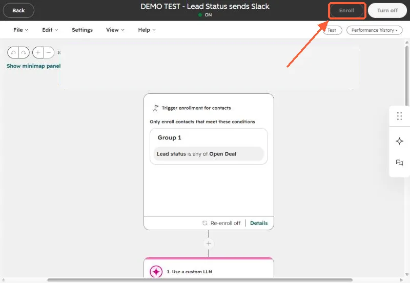
Two edge cases that look like bugs
- Date and number refinements are ignored for re-enrollment. If the trigger is "filled out the demo form between January 1 and February 1", re-enrollment fires on any later submission of that form, outside the date range too. The same goes for "any number of times" style refinements on a trigger like the one below.
- Time-window filters have a cooldown. With a re-enrollment trigger like "updated in the last 5 days", a record that enrolled will not re-enroll on another update inside that same 5-day window. After the window passes, the next update re-enrolls it.

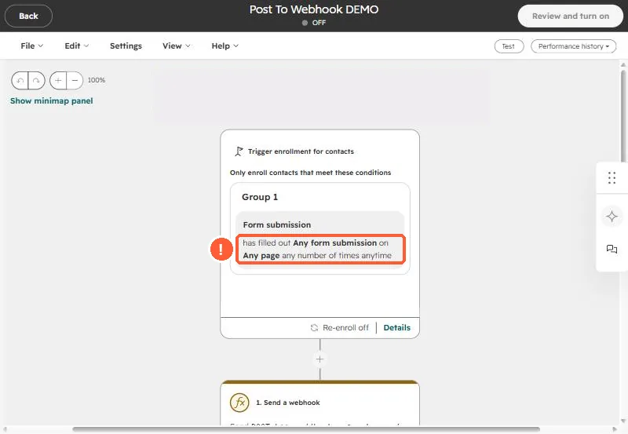
A re-enrolled contact starts the workflow from the top and gets every action again, including emails. Read through the workflow and ask whether a contact should really receive all of it twice.